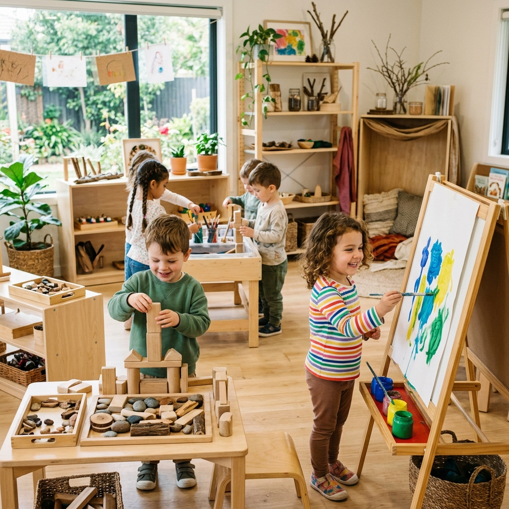
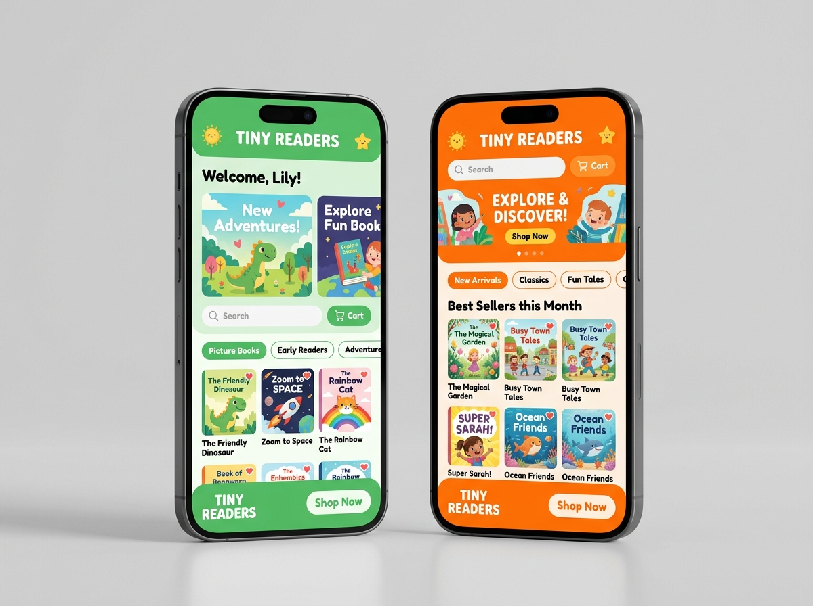

Tempat Hiro
Bertumbuh,
Belajar,
dan
Berkembang
Little Hiro hadir sebagai ruang yang nyaman untuk mendampingi setiap proses tumbuh kembang Hiro melalui daycare, stimulasi, terapi, psikologi, dan program pembelajaran terpadu di Gading Serpong.

Rasio Pendamping 1:3
Perhatian penuh untuk setiap Hiro
CCTV Real-Time
Mom & Dad tenang bekerja
Selamat Datang di Dunia Anak
Di Little Hiro, kami memadukan metode Montessori dan Reggio Emilia, dengan pendekatan yang berpusat pada anak (Child-Centered) dan pembelajaran berbasis proyek (Project-Based Learning) untuk menumbuhkan rasa ingin tahu, kreativitas, dan motivasi belajar intrinsik.
Metode Montessori
Eksplorasi material konkret untuk melatih kemandirian dan rasa percaya diri.
Reggio Emilia
Menjadikan lingkungan sebagai "guru ketiga" yang memancing rasa ingin tahu.

Child-Centered
Kami memfasilitasi minat alami mereka untuk memicu motivasi belajar intrinsik.
Project-Based
Kolaborasi memecahkan masalah nyata untuk mengasah kreativitas.
Program untuk Setiap Tahap Perkembangan Hiro
Kurikulum terintegrasi yang disesuaikan secara personal dengan usia biologis, minat, dan kecepatan bertumbuh setiap Hiro.
Daycare Terpadu
Layanan pengasuhan harian berstandar tinggi dengan nutrisi seimbang, jadwal terstruktur, pantauan CCTV real-time, dan laporan milestone harian yang komprehensif.
Konsultasi Psikologi
Layanan evaluasi kesiapan sekolah, screening tumbuh kembang dini, serta ruang konseling orang tua untuk memahami emosi dan perilaku anak.
Terapi Tumbuh Kembang
Intervensi terarah oleh terapis profesional bersertifikat untuk mendukung anak mengatasi kendala artikulasi bicara, fokus, sensory, dan perilaku.
After School Program
Kegiatan edukatif sepulang sekolah yang menggabungkan pendampingan belajar, pengembangan bakat, bahasa, calistung, dan aktivitas sosial yang menyenangkan.
Bingung Program yang Tepat untuk Hiro?
Jika Mom and Dad belum yakin terapi atau stimulasi apa yang sesuai, diskusikan terlebih dahulu bersama tim kami secara gratis.
Mengapa Memilih Little Hiro?
Standar pengasuhan holistik, keamanan mutlak, dan stimulasi ilmiah yang memberikan ketenangan batin bagi Mom and Dad di setiap langkah.
Pendampingan Profesional
Tim edukator berlatar belakang psikologi, pendidikan anak usia dini (PAUD), dan fisioterapi/okupasi berpengalaman yang mencintai anak-anak sepenuh hati.
Dipantau Psikolog Anak
Evaluasi berkala langsung oleh psikolog anak untuk memantau kematangan emosi, regulasi diri, dan deteksi dini hambatan perkembangan Hiro.
Lingkungan Nyaman & Higienis
Fasilitas dirancang ergonomis dengan child-proof safety, lantai empuk anti benturan, sterilisasi mainan UV rutin, dan sirkulasi udara HEPA filter.
CCTV Real-Time Monitoring
Mom and Dad dapat mengakses siaran kamera secara aman kapan saja melalui smartphone, menjamin transparansi dan ketenangan selama bekerja.
Program yang Terintegrasi
Daycare harian, terapi penanganan khusus, stimulasi motorik, dan kelas akademis berada dalam satu atap yang selaras tanpa repot berpindah lokasi.
Pendekatan Individual
Kami memahami bahwa setiap Hiro memiliki kecepatan unik. Tidak ada perbandingan atau tekanan—hanya bimbingan hangat yang menghargai jati diri anak.
Tim yang Mendampingi Hiro
Di balik setiap senyum dan pencapaian milestone Hiro, ada tim pengasuh berdedikasi, psikolog anak, dan terapis yang siap mendampingi dengan kesabaran tulus.
Tim Psikolog & Terapis

Miss Ivana, M.Psi., Psikolog
Head of Child Assessment & Psychology
Spesialis dalam asesmen kesiapan perkembangan, deteksi keterlambatan tumbuh kembang anak usia dini, dan konsultasi pengasuhan responsif bagi Mom and Dad.

Miss Sarah, S.Tr.Kes.
Senior Occupational & Sensory Therapist
Ahli dalam penanganan integrasi sensori, motorik halus, dan pembentukan kebiasaan fokus pada balita dengan pendekatan ramah bermain tanpa paksaan.
Tim Edukator (Teacher)
Miss Devi, S.Pd.
Early Childhood Development Specialist
Memimpin rutinitas harian anak, program calistung menyenangkan, serta memastikan kesejahteraan emosional Hiro selalu terpenuhi sepanjang hari.
Semua pengasuh dan staf Little Hiro menjalani background check menyeluruh dan pelatihan berkala dalam pengasuhan responsif.
Keseharian di Little Hiro Daycare
Dirancang dengan cermat mengikuti standar keselamatan anak usia dini internasional agar Hiro merasa nyaman seperti di rumah sendiri.



Dapatkan Berbagai Koleksi Buku Little Hiro
Kami juga menyediakan beragam pilihan buku edukasi dan aktivitas untuk mendukung tumbuh kembang Hiro di rumah. Temukan buku cerita interaktif, buku mewarnai, hingga panduan parenting lengkap di toko resmi kami!
- check_circle Tersedia lengkap di Shopee dan Tokopedia
- check_circle Banyak promo gratis ongkir & diskon spesial
- check_circle Packing aman dan pengiriman cepat
Cerita dari Mom and Dad
Ketenangan pikiran Mom and Dad selama bekerja dan kebahagiaan Hiro setiap pulang ke rumah adalah bukti dedikasi kami.
"Sejak bergabung di Little Hiro, kami melihat banyak perubahan positif dalam proses bicara dan kemandirian Hiro. Mom and Dad merasa sangat tenang saat bekerja karena update harian yang detail dan CCTV yang jernih."
Rafael's Dad
Gading Serpong, Tangerang
"Ruangannya sangat bersih, gurunya luar biasa sabar, dan terapis wicaranya sangat komunikatif. Terapi wicara di sini sangat membantu perkembangan artikulasi Hiro dalam 2 bulan saja. Terima kasih banyak Little Hiro!"
Kenzo's Mom
BSD City, Tangerang Selatan
"Pendekatannya sangat hangat dan tidak memaksakan. Hiro yang awalnya pemalu kini selalu antusias berangkat ke Little Hiro setiap pagi. Ia jadi lebih berani menyapa teman sebaya dan mau makan variasi sayur."
Alana's Mom
Alam Sutera, Tangerang
Pertanyaan yang Sering Diajukan
Temukan jawaban seputar usia, operasional, trial session, dan makanan di Little Hiro.
Masih Bingung Memilih Daycare untuk Hiro?
Yuk, kenali Little Hiro lebih dekat dan diskusikan kebutuhan spesifik Hiro bersama tim kami. Kami siap menyambut Mom and Dad untuk kunjungan & konsultasi personal hangat.
Little Hiro Daycare & Development Centre
Alamat Centre
Ruko Arcadia Grande, Jl. Boulevard Raya Gading Serpong Blok F1-F2, Klp. Dua, Tangerang, Banten 15810
Jam Operasional
Senin - Jumat: 07:30 - 17:30 WIB
WhatsApp Resmi
Media Sosial
Instagram: @littlehirodaycare
Ruko Arcadia Grande, Jl. Boulevard Raya Gading Serpong Blok F1-F2, Klp. Dua